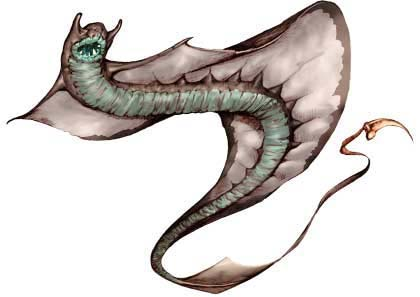

大型异怪（跨位面）

| 生命骰： | 8d8+32（68点生命值） |
| 先攻： | +2 |
| 速度： | 10英尺，飞行50英尺（完美） |
| 防御等级： | 17（-1体型，+2敏捷，+6天生），接触11，措手不及15 |
| 基本攻击／擒抱： | +6/+15 |
| 攻击： | 钉刺+10近战 |
| 全力攻击： | 钉刺+10近战和啮咬+5近战 |
| 伤害： | 钉刺2d4+5，啮咬1d6+2 |
| 面宽／触及： | 10英尺/10英尺 |
| 特殊攻击： | 毒素，翼斩 |
| 特殊能力： | 黑暗视觉60英尺 |
| 豁免： | 强韧+6，反射+4，意志+6 |
| 属性： | 力量21，敏捷14，体质19，智力1，感知10，魅力10 |
| 技能： | 聆听+8，侦察+7 |
| 专长： | 警觉，精通击破武器，猛力攻击 |
| 地域： | 任意陆地或地下（哈迪斯） |
| 组织： | 单独 |
| 挑战等级： | 7 |
| 宝物： | 无 |
| 阵营： | 总是中立 |
| 进化： | 9-16HD（大型）；17-24HD（超大型） |
裂喉怪最初是近乎无意识的蠕虫状掠食者，直到某位无名术士发现了将它们改造成如今这般飞行恐怖生物的方法。多数裂喉怪呈黑色，但灰色与绿色变种亦不罕见。它们拥有蠕虫状躯体，边缘锋利的巨翼几乎贯穿全身，使其形似蝠鲼。这种生物七鳃鳗状的口器位于腹侧，尾部修长如鞭且末端生有倒刺。
经由魔法创造而成的大多数裂喉怪如今充任尤格罗斯魔的坐骑。这些坐骑受魔法控制，并配备特殊鞍具以便骑乘。然而偶尔会有个体挣脱附魔束缚逃逸至荒野中。
裂喉怪对战术毫无兴趣，仅知用锋锐巨翼撕裂猎物的护甲。这种生物通常至死方休。
毒素（Poison）（Ex）：裂喉怪每次成功的钉刺攻击都会注入毒素（强韧DC18豁免通过则无效）。初始伤害为1d4力量加1d4敏捷；后续伤害为2d6体质。
翼斩（Wing Slash）（Ex）：若裂喉怪发动冲锋，可在冲锋结束时施展翼斩攻击。它对冲锋终点所有受威胁生物进行+9近战攻击，命中目标均受3d6+10点伤害。此外，若穿戴盔甲的生物受此攻击伤害，必须通过反射豁免（DC19）否则盔甲瞬间碎裂剥落。